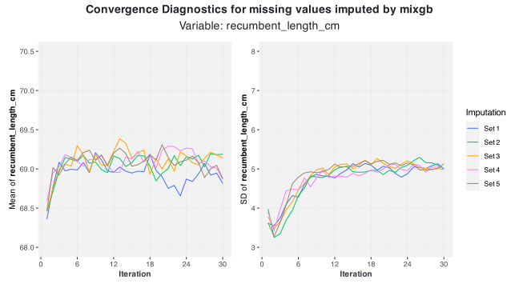

library(vismi)
library(mice)
library(mixgb)
set.seed(2026)
mice_obj <- mice(data = newborn, m = 5, maxit = 30, printFlag = FALSE)
mixgb_obj <- mixgb(data = newborn, m = 5, maxit = 30, save.models = TRUE)
mixgb_pmm_obj <- mixgb(data = newborn, m = 5, maxit = 30, pmm.type = "auto",
save.models = TRUE)Obtain imputation objects from mice and mixgb
For demonstration, we use the newborn dataset included in the vismi package. This is an incomplete dataset with missing values in variables of various types.
We first obtain imputation objects from both the mice and mixgb packages with 5 multiple imputations (m = 5) and 10 iterations (maxit = 10).
Visualise convergence diagnostic for mice object
vismi_converge(obj = mice_obj, x = "recumbent_length_cm", tick_vals = NULL,
linewidth = 0.5, mean_lim = c(68, 70.5), sd_lim = c(3, 8))
Visualise convergence diagnostic for mixgb object (with PMM)
vismi_converge(obj = mixgb_pmm_obj, x = "recumbent_length_cm",
tick_vals = NULL, linewidth = 0.5, mean_lim = c(68, 70.5),
sd_lim = c(3, 8))
Visualise convergence diagnostic for mixgb object (without PMM)
vismi_converge(obj = mixgb_obj, x = "recumbent_length_cm", tick_vals = NULL,
linewidth = 0.5, mean_lim = c(68, 70.5), sd_lim = c(3, 8))
Convergence diagnostic for mixgb object
To use
vismi_converge()for mixgb object, users are required to setsave.models = TRUEinmixgb()so that intermediate summary statistics for imputations would be saved at each iteration for plotting convergence diagnostics.